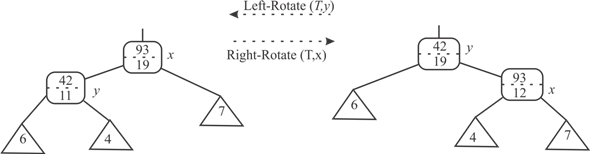

The SUCCESSOR and PREDECESSOR for a node x in time O(1) can be found by adding pointers to successor and predecessor of x inside the node structure.
After inserting node x do the following:
• Function CALL: TREE-SUCCESSOR(x), TREE-PREDECESSOR(x).
• Determine successor and predecessor.
• Setup required fields in x.
• UPDATE SUCC(x) filed of predecessor and PRED(x) field of successor and set the pointer point to x.
• Upon deletion of a node UPDATE SUCC(x) filed of predecessor and PRED(x) field of successor and set the pointer point to each other.
The MINIMUM and MAXIMUM are global properties of trees, can be maintained directly.
After inserting node x:
• Check if key (k), and.
• UPDATE: Pointer to MINIMUM and/or MAXIMUM.
• On deletion of minimum or maximum element in a tree, UPDATE: MINIMUM and/or MAXIMUM to it successor and/or predecessor.
Hence, these operations run in O(1) and without effecting the running time of other operations.
Red Black Tree is a special type of tree and each node contains five fields, p for parent, left for left child, right for right child, key for data value and color for color of the node.
Since the black height of a node can be calculated using the information in the left child, right child and itself, according to theorem 14.1, it is possible to maintain the black height of the nodes of red-black tree as attributes such that the asymptotic performance remains the same.
Black height of a node x:
• If the color of the node x is red, then the children of node x must be black. Now, the black height of the node x is the black height of its children plus one.
• If the color of the node x is black and one of the children is black, then the black height of node x is the black height of its children plus one.
• If the color of the node x is black and it two children are red, then the black height of node x is equals to the black height of its children.
Consider that,
• x is any node in the red-black tree.
• The black height of x is x.bh .
• Black height of left child of x is x.left.bh
• Black height of right child of x is x.right.bh
Since black height of a node is the number of black nodes in the descendants, updating black height of a node requires to updating the black height of its parent also. That is, this process ends on updating black height of the root node.
When the following actions occurred, the black height of few a nodes may change:
• A new node inserted into red-black tree:
• A node is deleted from the red-black tree:
When a node tree is inserted into a red-black tree or deleted from a red-black tree, red-black tree properties may be violated. To fix these violations, rotations are occurred. Rotations may cause change in the color of nodes. When the color is changed, the black height of nodes may change.
The change in black height of a node propagates up to the root node. Thus, the updating black height takes .
No change in asymptotic performance:
Insertion operation:
According to theorem 14.1, inserting a node into red-black tree takes O(log n) time and insertion leads to at most two rotation.
• Each rotation takes O(log n) time.
• For each rotation, updating black height of nodes up to root node takes O(log n).
•
Thus, the total time to insert a node is O(log n).
Deletion operation:
According to theorem 14.1, deleting a node form a red-black tree leads to at most three rotations.
• Each rotation takes O(log n) time.
• For each rotation, updating black height of nodes up to root node takes O(log n).
• Calculating black height can be accomplished in constant time O(1).
Thus, the total time to insert a node is O(log n).
Therefore, black height of node in a red-black tree can be maintained such that the running times of red-black tree operations remain same.
Maintaining depths:
The depth of a node completely depends on the depth of its
parent node. If the depth of a node is changed then all the depths
of its descendants must be changed. For example, if the depth of
the root node is changed, then the depths of all the nodes in the
tree must be changed. It is possible to maintain the depth of a
node as the attribute in the node. But, it affects the running time
of the basic operations of the red-black tree. Because updating
depth may take  time.
time.
Associative binary operator:
A binary operator is said to be associative if the operator follows the associative property for the given operands.
In more concrete words a binary operator would be said associative if it has the following form:
Augmented Data structure:
A data structure is said to be augmented when an additional attribute is added to it.
Here the red black tree is augmented by adding an additional attribute f to each node so that
Where a is an attribute of each node of the tree and is the in-order traversal of the tree who has x as the root.
Maintaining f attribute of each node after rotation:
Suppose there is x rooted tree T, the additional attribute value of root node x is. After the right rotation left child becomes the root of the tree refer Figure 1. When x rooted tree is rotated right then suppose the new root of tree T is y.
• The additional attribute value of new root node y is same as old root node that is. It is because the value of attribute f is calculated by applying associated binary operator on in-order traversal of tree.
• The rotation of tree only changes the in-order traversal of tree but operation in associated binary operator does not depend on the order.
• After rotation the value of additional attribute f of node x is the resultant of associated binary operator on and right child ofbefore rotation.
• The f value of all remaining node would remain same.
The f value of only 2 node get change after rotation,
Therefore the time required to update the f after rotation
is .
.
Maintaining size attribute of every node after rotation in order-statistic tree:
The above stated procedure can also be used to maintain the size attribute of each node after left or right rotation.
The modification required in above procedure is to replace attribute f with size and use plus (+) as associated binary operator.
Consider the following tree T to display the update size attribute of each node after rotation:

Figure 1
Explanation:
• After right rotation the size new root node y is same as size of old root node x that is 19.
• After right rotation the size node x becomes:
Add one more in size for the node x itself, therefore the total size of
• The size of remaining node or sub-tree is same before rotation.
All these modification will require time.
time.
Therefore, to maintain the size
attribute of every node after rotation in order-statistic tree
require
time.
An operation ENUMERATE(x, a, b) is augmented with the
REB-BLACK-TREE with root x which returns all the key values
k in the tree where .
Implementation of RB-ENUMERTAE in where
m is total number of key values in the tree and n is
the number of internal nodes in the tree.
.
Implementation of RB-ENUMERTAE in where
m is total number of key values in the tree and n is
the number of internal nodes in the tree.
Red Black Tree is a special type of tree in which each node contains an extra bit for the storage of the color of that node. So Red Black Tree contains five fields p for parent, left for left child, right for right child, key for data value and color for color of the node.
The implementation of the ENUMERATE(x, a, b) is as where x is the root of the RB-Tree and a and b are any nodes in the tree.
ENUMERATE(x, a, b)
// first search the node a in the tree
1.
2. if
3.
// scan all the nodes from a to b
4. while
5. print “start”
6.In the above algorithm, the tree search and successor are called so we can modify the procedure TREE-SEARCH so that it results in the minimum element in the tree which has value greater than a if a is not present in the tree. This process takes time to run.
Now the function TREE-SUCCESSOR is called until a node which has key value greater than the value of node b is found. And this function will be called in m times.
So if any function starting at any node and makes m successive calls to Tree-Successor will take time interval here h is the height of the tree. Thus the function ENUMERATE should be implemented in time.
We can use Successor and Predecessor function pointers to
produce the result of m keys with  running
time. So that total running time will be time.
running
time. So that total running time will be time.
Hence, ENUMERATE(x, a, b) augmented to the RB-Tree with
root x which returns all the key values k in the tree
where and it runs
in.